Details
What information helps Port respond with a useful answer instead of a generic reply.
Contact / 01
Contact opens as a clear maritime decision hub: what Port offers, who it helps, why it matters, and which route to take first.
The first screen combines positioning, proof, primary action, and fast internal navigation, so people can act immediately or compare the rest of the contact route with context.
Shipping route hero
Select the closest route and Port keeps the next step, proof, and follow-up expectation aligned with cargo reliability and reach.
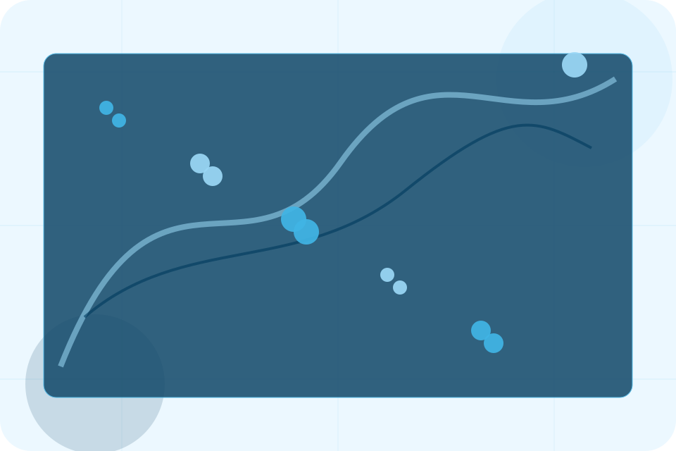
Contact / 02
Cargo makes the contact path concrete: what to send, how the response works, and what Port needs before visitors request shipping.
The section reduces contact friction by naming the channel, expected detail, privacy path, and response expectation instead of dropping visitors into a generic form.
Request Shipping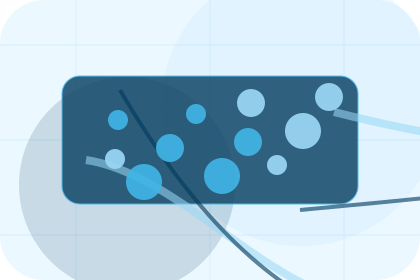
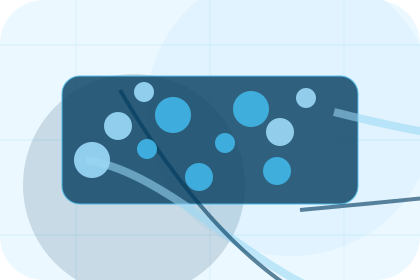
What information helps Port respond with a useful answer instead of a generic reply.
Contact / 03
Vessel makes the contact path concrete: what to send, how the response works, and what Port needs before visitors request shipping.
The section reduces contact friction by naming the channel, expected detail, privacy path, and response expectation instead of dropping visitors into a generic form.
Request ShippingWhat information helps Port respond with a useful answer instead of a generic reply.
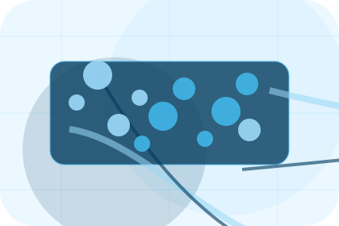
How the visitor should think about response, urgency, location, or availability.
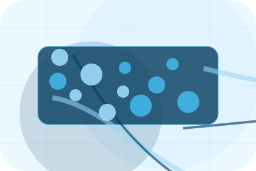
The expected next message keeps scope, timing, and the first practical step clear.
Contact / 04
Port makes the contact path concrete: what to send, how the response works, and what Port needs before visitors request shipping.
The section reduces contact friction by naming the channel, expected detail, privacy path, and response expectation instead of dropping visitors into a generic form.
Request ShippingWhat information helps Port respond with a useful answer instead of a generic reply.
How the visitor should think about response, urgency, location, or availability.
The expected next message keeps scope, timing, and the first practical step clear.
Contact / 05
Details makes the contact path concrete: what to send, how the response works, and what Port needs before visitors request shipping.
The section reduces contact friction by naming the channel, expected detail, privacy path, and response expectation instead of dropping visitors into a generic form.
Request ShippingWhat information helps Port respond with a useful answer instead of a generic reply.
How the visitor should think about response, urgency, location, or availability.
The expected next message keeps scope, timing, and the first practical step clear.
Contact / 06
Sales makes the contact path concrete: what to send, how the response works, and what Port needs before visitors request shipping.
The section reduces contact friction by naming the channel, expected detail, privacy path, and response expectation instead of dropping visitors into a generic form.
Request ShippingWhat information helps Port respond with a useful answer instead of a generic reply.
How the visitor should think about response, urgency, location, or availability.
The expected next message keeps scope, timing, and the first practical step clear.
Contact / 07
Response makes the contact path concrete: what to send, how the response works, and what Port needs before visitors request shipping.
The section reduces contact friction by naming the channel, expected detail, privacy path, and response expectation instead of dropping visitors into a generic form.
Request Shipping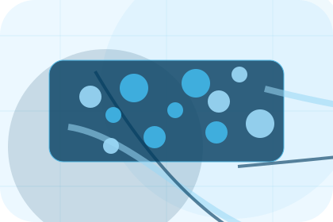
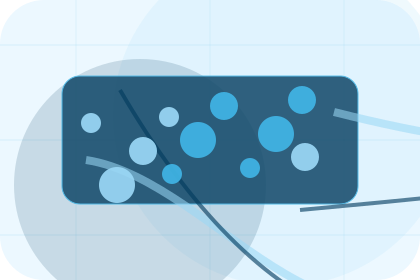
What information helps Port respond with a useful answer instead of a generic reply.
Contact / 08
Form makes the contact path concrete: what to send, how the response works, and what Port needs before visitors request shipping.
The section reduces contact friction by naming the channel, expected detail, privacy path, and response expectation instead of dropping visitors into a generic form.
Request ShippingPort keeps form practical: send the key details, choose the right contact route, and know what kind of reply to expect.
Request Shipping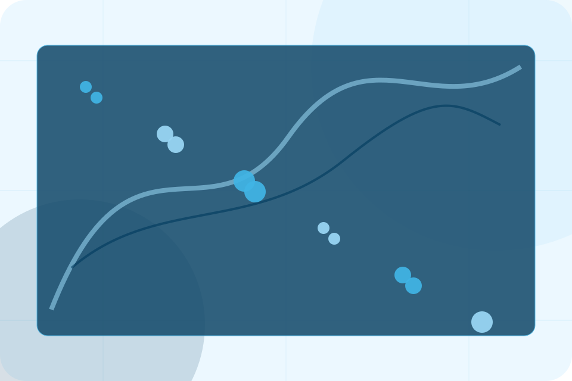
Contact / 09
Submit makes the contact path concrete: what to send, how the response works, and what Port needs before visitors request shipping.
The section reduces contact friction by naming the channel, expected detail, privacy path, and response expectation instead of dropping visitors into a generic form.
Request Shipping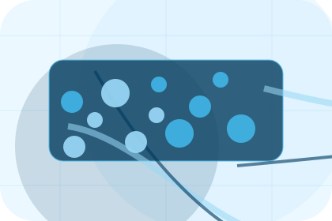
What information helps Port respond with a useful answer instead of a generic reply.
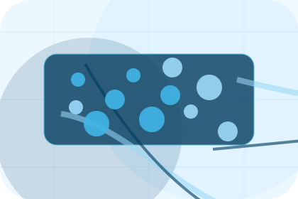
How the visitor should think about response, urgency, location, or availability.
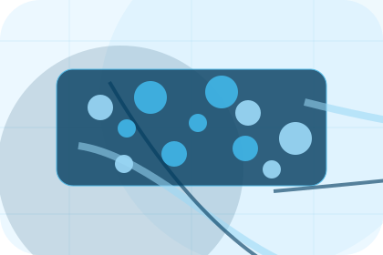
The expected next message keeps scope, timing, and the first practical step clear.
Contact / 10
Port closes the contact route with a clear action, a quick reminder of the value, and a low-friction way to request shipping.
Visitors who are ready can use the primary action. Visitors who are still comparing can scan the section links, proof, and support routes before they request shipping.
Request ShippingThe final block keeps the choice simple: act now, compare one more proof route, or send enough detail for a focused response.
Request Shippingcargo reliability and reach
A shipping site with ocean-blue service panels, cargo quote logic, port schedules, and tracking proof. Contact ends with a direct path to request shipping, plus enough context for visitors who still need to compare.
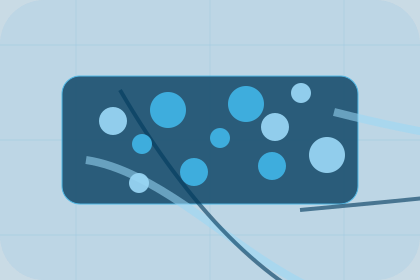
Request ShippingInformation is provided for planning and should be reviewed for the final client, location, and operating rules.